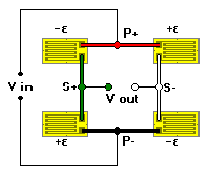

4-Arm (Bending/Shear) Bridge
4-Arm (Bending/Shear) Bridge4-Arm (Bending/Shear) Bridge
Associated Application
General Considerations
The most common bridge arrangement used in transducers. This circuit, which yields the maximum bridge output, is assumed in all calculations for bending, shear, and torque designs in TransCalc.

Bridge output calculations assume uniaxial stress fields in bending beam designs and perfect biaxial stress fields in shear and torque designs. Bridge output varies linearly with strain under these conditions
Inputs (Limits)
 Strain (-5000 to +5000 microstrain)
Strain (-5000 to +5000 microstrain)
Gage Factor (1.0 to 5.0)
Calculations
 Output (mV/V)
Output (mV/V)